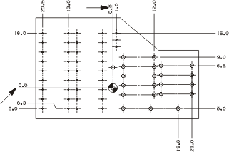
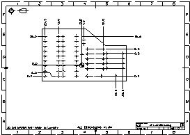

打开捕捉点选项圆弧中心 ，并关闭所有其它选项。
选择原点符号所在的圆弧，将出现将在两个激活的边距上再出现两个尺寸，它们的值都是0.0。
但是，注意文本位于边距线上方，并且没有像其它尺寸一样对齐，这是因为您没有更改文本对齐的全局注释首选项，而是只编辑了现有尺寸的对齐首选项。

点击鼠标中键以完成尺寸集的编辑，然后编辑两个新尺寸，以使它们像其它尺寸一样对齐，可以参考前面的“编辑尺寸样式”。

关闭所有部件。